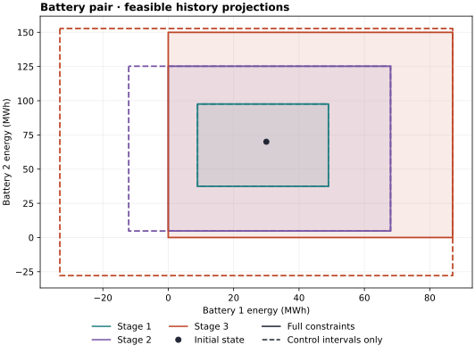

How constraints change reachable sets
Project the feasible histories of 35 discrete models over three steps. For each model, compare the complete task constraints with the same dynamics, initial state, external forecast, and per-control intervals.

Project the complete history
Let F contain the histories (x0, …, x3, u0, …, u2) that satisfy the three-step model and its constraints. Let Pk select the two plotted coordinates at stage k. To find the support in direction d, maximise dTPkxk over F.
Keep the intermediate state bounds, coupled rows, positive-part budgets, and terminal requirements in the full profile. For the interval-only profile, drop those four constraint groups. A point in the full projection extends to a feasible history through stage three. If the complete history is infeasible, every stage projection is empty, including stage zero.
Read the projections
At stage three, the minimum total stored energy rises by 60.986 MWh when the full constraints apply. The support in direction (−1, −1) gives the negative of that minimum. The plot gives a geometric view of that restriction.
- Bike stations, model 9. Station one starts at 12 bikes and loses at least five per step under the fixed forecast. After three steps its count is at most −3, which contradicts the required zero floor.
- Ten-car platoon, model 26. The paired supports agree to roundoff. Exact rational evaluation over the control box gives more than 3.67 m of slack on every headway row in this fixture.
Check the result
| Native outcome | Full history | Control intervals only |
|---|---|---|
| Optimal | 991 | 976 |
| Infeasible | 32 | 0 |
| Unbounded | 0 | 48 |
| Unsupported | 96 | 96 |
| Undetermined | 1 | 0 |
The independent checker eliminates the state variables and solves the resulting LP with SciPy’s HiGHS interior-point interface. Across 1,967 optimal supports the largest scaled discrepancy is below 2.85 × 10−14. The largest scaled witness residual is below 2.41 × 10−11. These results check sampled directions for the stated three-step fixtures.
Models 23, 27, and 28 hit the native small-coefficient guard in both profiles. Model 30 has one undetermined query at stage zero. The archive keeps these outcomes alongside the independent checks.
Reproduce the sweep
Extract the original evidence ZIP and follow RUN.txt using CSL SDK v0.1.1. The ZIP includes the C++ driver, all model inputs and query results, the independent check, and the plot source.